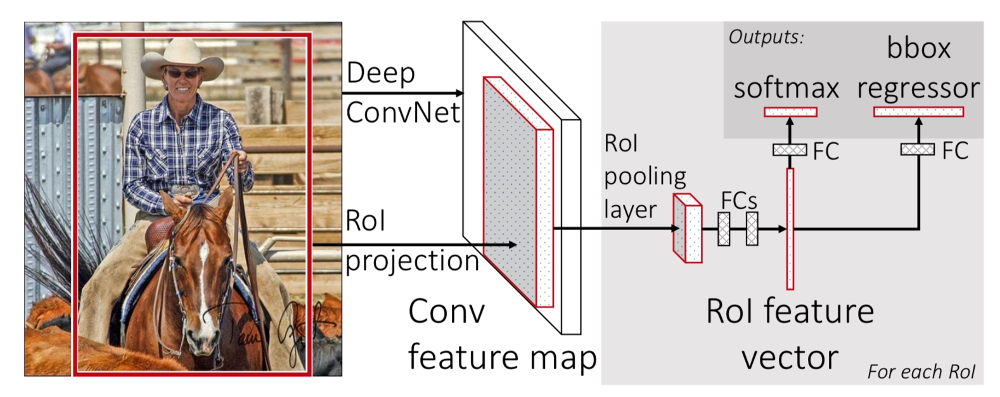

本次介绍的是Fast R-CNN，与之前的RCNN和SPPNet不同，Fast R-CNN是一个清晰和快速的目标检测的框架。在训练和测试的速度上都远超过上述两种方法。同时，Fast R-CNN的训练是一次性的端到端的训练，同时训练的分类和回归两个任务。极大的简化的训练的流程。
项目代码：https://github.com/rbgirshick/fast-rcnn
三、Fast R-CNN
1）R-CNN与SPPNet的不足
R-CNN在目标检测中有很好的准确率，但是这个方法本身仍有很多的问题。
- 训练过程是多级的。 R-CNN的训练分成三个部分，首先是
finetune一个网络（目标检测的类别和ImageNet不一样）。之后是使用SVM进行目标的分类的训练。最后是使用feature map来进行目标的bounding-box的回归训练。 - 训练过程费时费空间。 SVM和回归两个任务，需要存储目标的特征，需要很多空间。网络的训练过程很慢。
- 测试速度太慢。 需要对每个
proposal进行前馈，耗时太长。速度只有47s / image。
SPPNet 可以加速 R-CNN，在 SPPNet 中，在卷积的部分直接前馈整张图片，之后对于每个 proposal，计算出它在 feature map 上的位置，然后使用 SPP Pooling 的方式，得到定长的特征向量。使得测试时间大大缩短。但 SPPNet 也有很多的问题。首先，SPPNet 在训练的过程和 R-CNN 几乎相同，因此有上面所有的问题，其次，SPPNet 只训练的网络最后的FC层，这样，前面的卷积的部分就没有参与训练。
2）Fast R-CNN的主要贡献
- 更好的检测效果（mAP）
- 训练是单步的，使用多任务loss
- 所有的网络的参数都可以训练和更新
- 不需要存储特征
3）Fast R-CNN的训练
Fast R-CNN 的结构如下：

首先按照惯例，使用一个在ImageNet预训练好的模型。保留网络的卷积的部分，在卷积的后面接上 RoI Pooling 层，RoI Pooing 层可以将 feature map 上任意大小的特征区域 Pooling 到指定的大小。直接接入若干个全连接，最终再接上两组输出的分支。一个用于输出分类的结果，假设有K个类别的目标，则输出K+1个类别，其中多出的一个类别是背景类。另一个分支用来输出回归的结果，每个目标都有自己的回归的结果，因此总的输出数为4K（K个类别的 x,y,w,h）。
这里就有一个问题：我们为什么不直接输出4个数值直接表示目标的位置，而是这么费劲的得到4K个输出呢？其实回归出4个值，讲道理也是可行的。通常给每个类都进行回归，可以理解为每个类别都是用自己这个类别自己的信息进行位置的预测，而不是使用统一的信息进行预测。比如一张图是人骑自行车，那么我们应该回归出人还是自行车呢？而这里的策略就是两个都分别回归出两个目标的位置。
1 RoI Pooling层
RoI Pooling 层是一种简化版本的 SPP Pooling 层。他的计算方式如下：
对于 feature map 上的一个感兴趣的区域（Region of Interest），即 RoI，其大小为 W × H。我们需要把它 pooling 到 W x H 的大小。那么我们就使用 \(\frac{W}{w}*\frac{H}{h}\) 的 pooling 核，stride_w 设成 \(\frac{W}{w}\) ，stride_h 设成 \(\frac{H}{h}\) 。这样经过 pooling 就可以到的我们需要的 W x H 的输出了，且通道数不变。当然这里要考虑取整的问题，细节上可以看一下 FastR-CNN 的源码。
2 使用预训练的网络
本文中，使用了3个在ImageNet预训练好的模型。他们都有5个 max pooling 层，卷积层数在5-13之间。对于这些用于初始化的模型，需要做三点改变：
- 将最后一个
max pooling层替换成RoI Pooling层。输出固定的大小，并且这个大小和网络的全连接的输入要相匹配。（看样子，这里还想复用之前的FC层的参数） - 网络的最后的FC层，替换成两并列的FC。一个用于输出新的类别（K+1），另一个用来输出回归的结果（4K）。
- 网络的输入变成两个，一个是图像数据（N个），另一个是
RoI（R个）。
3 Fine-tuning for detection
在 Fast R-CNN 中，训练的样本是整张图像，网络的卷积部分可以处理任意尺度的输入，因此可以一次性得到整张图像的 feature map。之后，根据输入的 RoI 的位置（也就是之前的 Proposal），对每个区域在 feature map 上进行 RoI Pooling，得到固定大小的输出。最终经过若干个全连接，得到分类和回归的输出，监督训练。从而使得检测任务可以做到 one stage。整个过程包括：Loss，mini-batch 采样策略，RoI Pooling 层的后馈以及 SGD 的超参数。下面专门依次介绍。
4）Fine-tuning for detection
1 Multi-Task loss
网络共有两个输出，一个是每个RoI的分类的概率，使用 Softmax 之后得到概率分布 \(p=(p_{0},p_{1},p_{2},...,p_{K})\)。
另一个输出是回归的结果，每个类别的结果用 \(t^{k}=(t^{k}_{x},t^{k}_{y},t^{k}_{w},t^{k}_{h}), k \in [0,K)\) 表示。
这里使用多任务Loss的监督学习：
\[L(p,k^{*},t,t^{*})=L_{cls}(p,k^{*})+\lambda[k^{*}\ge1]L_{loc}(t,t^{*})\]
其中，\(k^{*}\) 表示正确类别的 label，\(L_{cls}(p,k^{*})=-log(p_{k^{*}})\) 是标准的交叉熵Loss。
对于回归的部分，对于一个类别 \(k^{*}\) ，正确的回归值为 \(t^{*} = (t^{*}_{x},t^{*}_{y},t^{*}_{w},t^{*}_{h})\) ，预测的回归值 \(t = (t_{x},t_{y},t_{w},t_{h})\) ，对于 \([k^{*}\ge1]\) 的值，当 \(k^{*}\ge1\) 时为1，否则为0（0的时候表示背景类，不需要回归）。
对于回归，使用如下的Loss：
\[L_{loc}(t, t^{*}) = \sum_{i \in {x,y,w,h}} smooth_{L1}(t_{i}, t^{*}_{i})\]
其中：
\[smooth_{L1}(x) = \left\{\begin{matrix} 0.5x^{2} & if |x| < 1 \\ |x|-0.5 & otherwise \end{matrix}\right.\]
使用 smoothL1 Loss 的好处是，在 x比较大的时候，他的梯度为固定的1，而使用 L2 Loss 的时候，其梯度为 2x，会变得很大，不利于训练。
等式中的 lambda 用来平衡两种 Loss 之间的关系，这里的对于 groundtruth 进行了归一化，使得他的均值为0，方差为单位方差。在这种情况下，lambda 取1，在各种实验中均取得了不错的结果。
这里的归一化的操作，在之前的 RCNN 和之后的 Faster R-CNN 等都没有再出现。让我仔细看了一下源码才大致知道他是怎么计算的。至于效果，论文中并没有提到。这里感兴趣的同学可以看看源码。
对于回归值的计算。使用如下的公式：
\[G=\{G_{x},G_{y},G_{w},G_{h}\}\]
表示 groundtruth 的位置，\(P=\{P_{x},P_{y},P_{w},P_{h}\}\) 表示 proposal 的位置。x 和 y 表示目标中心的坐标，w 和 h 表示宽和高。对于每个 proposal，其回归的目标为：
\[\begin{matrix} t_{x} = \frac{G_{x} - P_{x}}{P_{w}} \\ t_{y} = \frac{G_{y} - P_{y}}{P_{h}} \\ t_{w} = \log{\frac{G_{w}}{P_{w}}} \\ t_{h} = \log{\frac{G_{h}}{P_{h}}} \end{matrix}\]
这里的 tw 和 th 用了一个 log 函数，为什么不直接使用类似于 Gw/Pw - 1 这样的形式呢？我想了很久，才恍然大悟。如果 Gw/Pw 的值分别为0.5和2的时候，二者都是两倍的关系，取log之后正好互为相反数。
2 Mini-batch的样本选择
对于每一个 mini-batch，选择2张图片，每个图片选择64个 RoI，得到总计128个 RoI。其中25%的 RoI 与目标的 IOU 大于0.5，即25%的正样本，75%的负样本。在训练中，所有的样本按照50%的几率翻转。没有其他的额外的数据增强的策略。
3 RoI Pooling层的后馈
这部分没什么好说的，和 Max Pooling 一样，RoI Pooling 前馈的时候保存的最大值的索引信息，直接后馈就行。
4 SGD 超参数
The fully-connected layers used for softmax classification and bounding-box regression are initialized randomly from a zero-mean Gaussian distribution with standard deviations 0.01 and 0.001, respectively. All layers use a per-layer learning rate of 1 for weights and 2 for biases (following standard practice) and a global learning rate of 0.001. When training on VOC07 or VOC12 trainval we run SGD for 30k mini-batch iterations, and then lower the learning rate to 0.0001 and train for another 10k iterations. When we train on larger datasets, we run SGD for more iterations, as described later. A momentum term with weight 0.9 and weight decay factor of 0.0005 are used in all experiments.
5）尺度变化
由于目标的尺度跨度很大，这里有两种处理的办法：
1 暴力学习
使用整张图片训练，一次性处理所有尺度的目标。这样依赖网络学习出不同尺度的目标。
2 图像金字塔
将图像进行不同尺度的缩放，每种尺度的图像，网络都只学习最适合学习的尺度的目标。在测试的时候，也是，输入不同尺度的图像，得到不同尺度的目标。在实验中，这种方法的mAP更高，但是更加的耗时。
6）SVD分解，压缩检测
在一般的分类的网络中，计算量主要在前面的卷积的部分。但是对于检测来说，由于有大量的RoI，对于每个RoI都需要经过一次全连接，最终卷积和全连接的计算量差不多。
对于一个全连接，它的权重是一个 u × v 的矩阵 W。可以使用 SVD 近似的分解成：
\[W \approx U\Sigma _{t}V^{T}\]
这样分解之后，U 是个 u × t 的矩阵，\(\Sigma_{t}\) 是个 t × t 的对角阵，V 是个 v × t 的矩阵。当 t 远小于 min(u,v) 的时候，参数量就可以从 uv 缩减到 t(u+v)。同时计算量也大大减少了。
7）个人总结
Fast R-CNN 中，将目标检测的任务集成为一个清晰的框架，极大的简化了目标检测的训练过程，同时在速度和精度上均得到的很好的保证。其思想影响了之后的各种改进版本的目标检测算法。真的十分值得仔细的阅读。